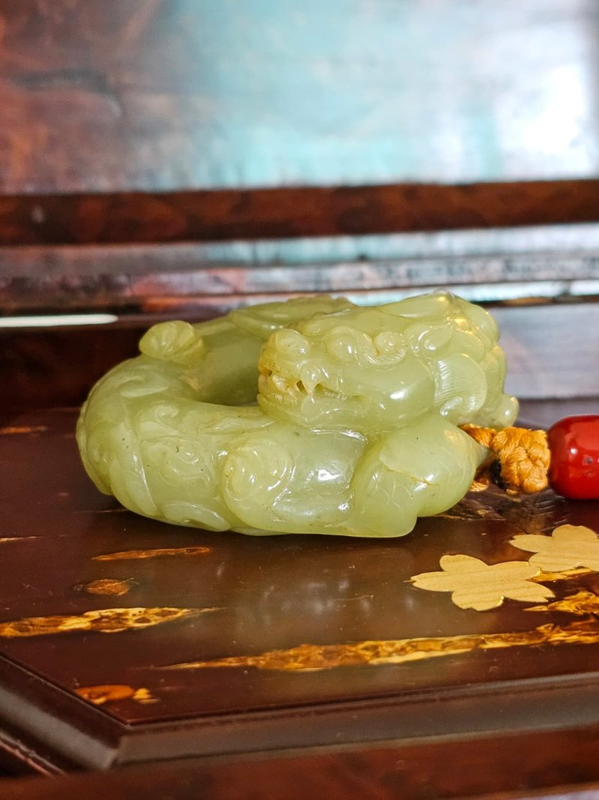
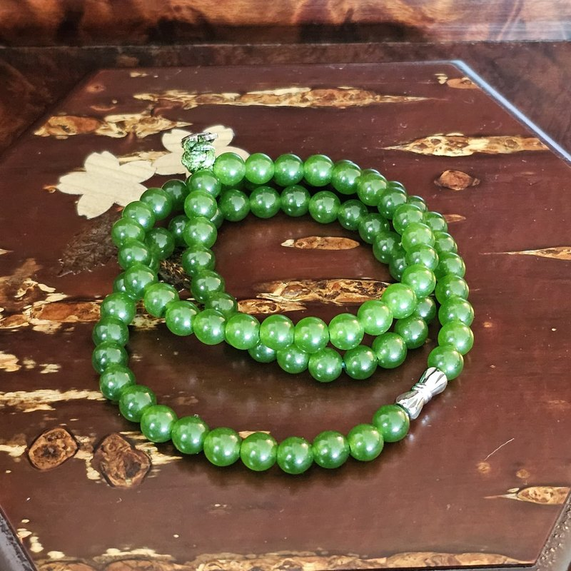
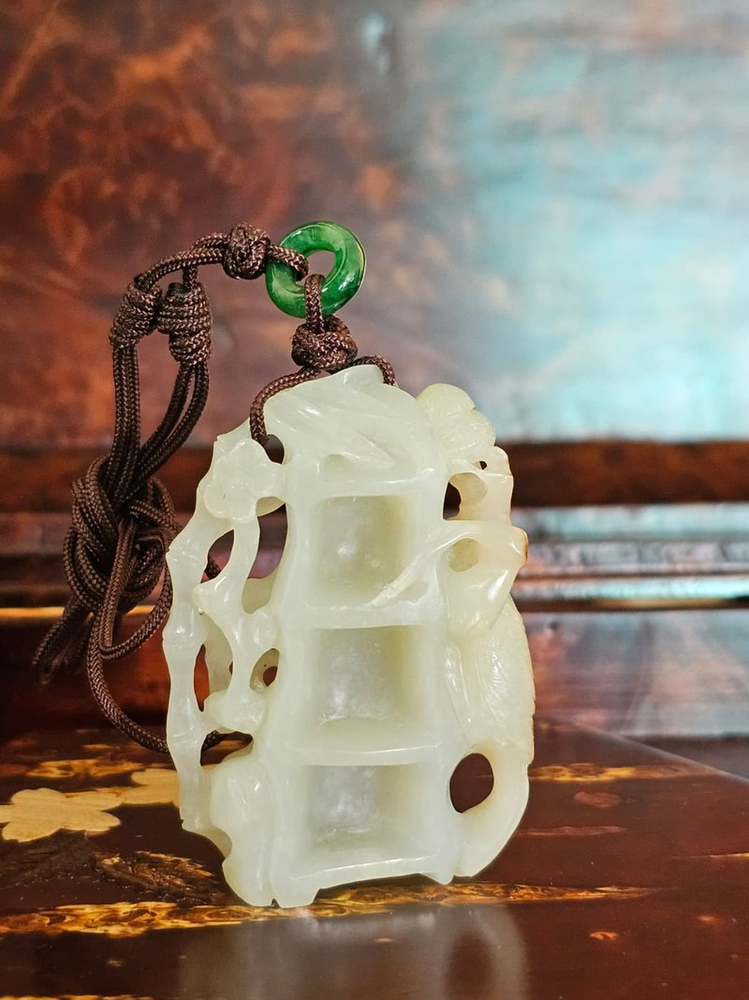
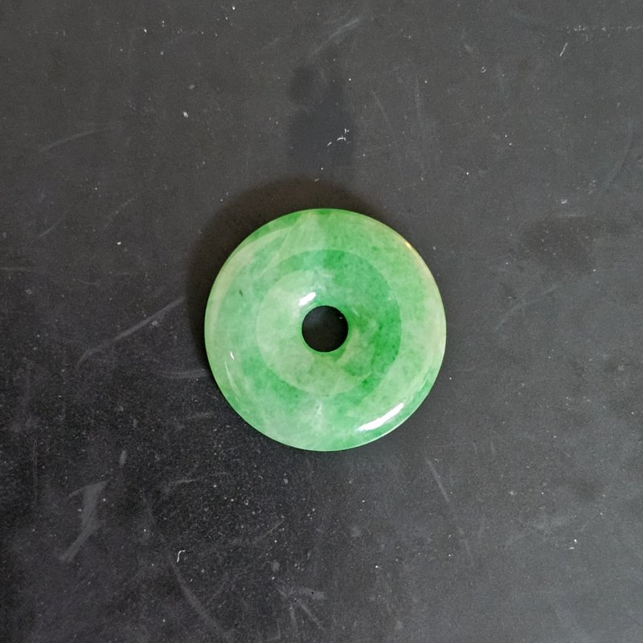
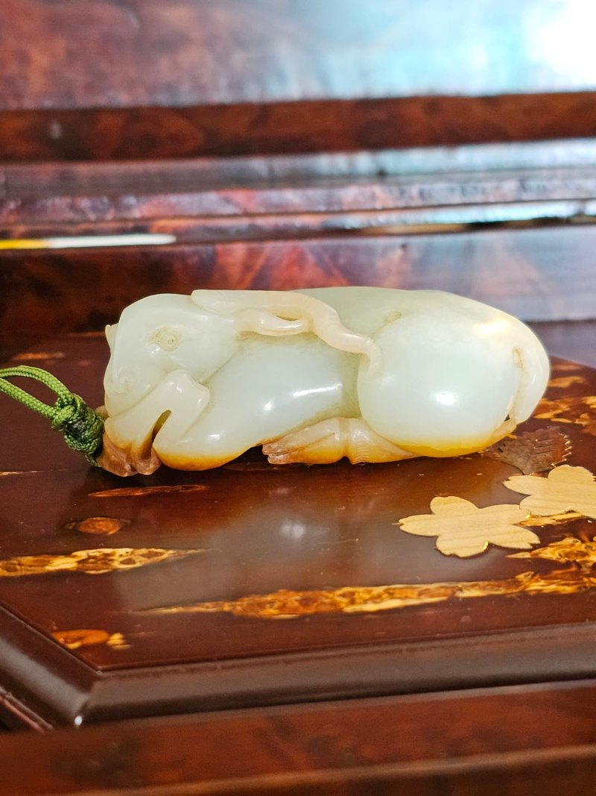

白玉「馬上封侯」White Jade 'Horse and Monkey'
此藏品之珍貴在於其獨特的「牛毛滲」沁色。這種沁色細如牛毛、分布自然，是古玉長期受地氣影響形成的自然特徵，極難偽造。在擁有深厚沁色的同時，白玉本體依然保持高度的溫潤與透白，這種「沁不毀玉」的極佳品相，在唐代高古玉中實屬罕見。
The value of this piece lies in its ox-hair staining: hair-fine, naturally distributed, and exceptionally difficult to imitate. Crucially, the white jade beneath remains warm and translucent — the 'stain that does not spoil the jade' condition collectors prize in Tang-era material.
十五件，逐一建檔
由唐代風格重器到近代翡翠小品，每件均附獨立鑑定檔案，說明材質、工藝、年代參考、尺寸重量與品相。

青黃玉「祥龍盤踞」

地方白玉「府上有龍」

天然碧玉「郁綠圓滿」83粒珠串

灰白玉「和合二仙」

白玉帶皮「喜鵲登梅．竹報平安」

翡翠「歲歲平安」平安扣

J-005 · 清代風格看得見的玉，說得清的來歷
本人曾從事珠寶行業，對玉石與古玩雜項均有研究。本軒藏品不求多，只求每一件都能說清楚：玉料是什麼、工藝怎麼做、沁色皮色從何而來、品相好在哪裡、瑕疵又在哪裡。
I spent my career in the jewellery trade, and I study both jade and the wider field of antiques. This collection is deliberately small. What matters is that every piece can be explained: what the stone is, how it was carved, where the staining comes from, what is good about its condition — and what is not.
材質與產地判斷
和田軟玉、翡翠硬玉、地方玉、碧玉，逐一說明種質、結構與光澤特徵。
工藝與刀法
圓雕、透雕、鏤雕、巧雕、剔紅，說明工序與時代風格特徵。
沁色・皮色・包漿
牛毛滲、水銀沁、秋梨皮、金紅皮，分辨自然受沁與人工做舊之別。
品相如實說明
天然石紋、棉紋、老漆乾裂紋，一律列明，不作隱瞞。
高價單品，本應慢慢看
珠寶業背景
賣家曾任職珠寶行業，對玉石種質、顏色、工藝與市場行情具實務經驗。
逐一建檔
每件藏品均有獨立鑑定檔案，載明材質、工藝、年代參考、尺寸、重量與附屬品。
預約親鑑
香港私人預約鑑賞，可上手感受重量、溫度與包漿，眼見為憑。
如實說明
天然石紋、棉紋、老件乾裂紋等一律如實列出；年代參考僅為風格判斷，不作誇大斷代。
四步，由瀏覽到上手
一、瀏覽藏品檔案
於藏品目錄中查看每件藏品的照片、尺寸、重量與鑑賞筆記。
二、WhatsApp 或微信洽詢
告知藏品編號，我們會提供更多角度照片、細節影片或補充資料。
三、預約私人鑑賞
於香港安排私人時間地點，親自上手察看，並可帶同專家同行。
四、議價與交付
價格面議。確認後安排交付，並附上該件藏品之完整鑑定檔案。
想找一件特定的玉？
如您正在尋找特定題材、玉種或年代風格，歡迎直接聯絡，我們樂意代為留意。